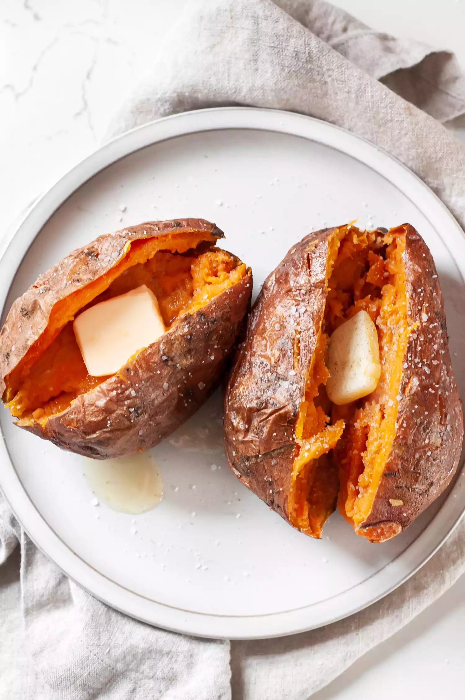

Sweet Microwave Sweet Potato Recipe

Description
Sweet potatoes are a favorite of mine with their vibrant, creamy, naturally sweet interiors. Whether mashed, roasted, fried, or steamed; whether they hold a starring role as a main dish or add a little something special to a recipe, sweet potatoes are a superstar veggie.
While I love a perfectly baked sweet potato, they certainly take their sweet time to cook through. You can easily end up waiting an hour for a baked sweet potato—fine if you have the time and don’t mind heating up your kitchen, but not great for a quick meal.
Enter the microwave. While the device is often relegated to reheating leftovers, it’s also great for steaming foods like broccoli, rice, and sweet potatoes. In less than 10 minutes flat you’ll have a moist, fluffy, ready-to-eat sweet potato. If you have an extra 10 minutes, pop it in the oven to crisp the skin. You won’t be able to tell the difference between your shortcut microwave sweet potato and a 100% baked one.
Ingredients
- 1 medium sweet potato, about 10 ounces
- 1/2 teaspoon olive or canola oil, optional
- 1/4 teaspoon kosher salt, optional
Method
Prepare the sweet potato:
If you’d like to crisp the skin on your sweet potato, preheat the oven to 425°F.
Give the sweet potato a wash, but don’t dry it off. The residual moisture will help keep the sweet potato moist.
Use a fork to prick the sweet potato 4 to 5 times all over.Wrap the sweet potato:
Moisten a paper towel with water and wring it out. Use it to tightly wrap the sweet potato and place it on a microwave-safe plate.
Alternatively, you can add the sweet potato to a microwave-safe lidded container. Add the lid, leaving it just barely cracked.Microwave:
Place the plate in the microwave and cook on high power for 5 minutes. When done, you’ll be able to easily pierce the sweet potato all the way to the center with a fork or all the way through with a paring knife. If your sweet potato is not quite tender enough, re-wrap it and microwave it for another minute.
Once you’ve figured out what size potato and what timing works with your microwave, make a note and do it every time for the best results.- Bake until bubbly and you're ready to eat!